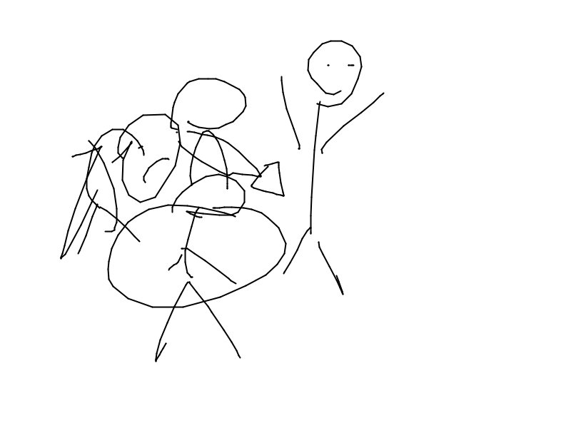

1:32 AM

Coy: We should really sleep soon, it's getting late. I'm sure Apollo will wake us up early for the adventure anyways.
Aegis: Yeah, I don't think I could sleep if I laid down right now. I am too excited. I mean... even just the fact that we are finally together again. All of us I mean. It's been months since we did a 'grandma's house'.
Joseph: Well we are growing up. Most of us have moved away farther and farther and are following different paths. It's hard to plan stuff like this when you're not an unemployed middle schooler.
Aegis: I wish we could just be like how we were. I'm scared that if we grow farther and farther apart eventually we'll just...
Pel: Yaaa sacmalama, we keep talking over videochat and playing video games online. We'll be fine. Also, thinking about how sad it is when we are not together while we ARE together isn't helpful. We are together now. Dusty and Apollo haven't argued for once, we are preparing for a big fun adventure tomorrow. This is as good as it gets.
Aegis: You're right. I guess you are right.
Meanwhile in another roomGo Back